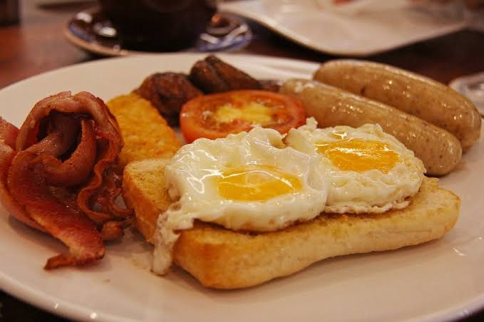

Back to Home
Breakfasty Dinner or Lunch

Note: This image is from Google and does NOT represent the actual dish. LOL.
Description
Kinda easy but kinda not, because there are a lot of small steps.
The name is inspired by the GR family. Having Breakfasty Dinner or Lunch for breakfast is possible but should be considered culturally insensitive.
Ingredients
- 2 frozen sausage links
- frozen potatoes, e.g. tater tots
- frozen broccoli
- 2 eggs
- milk to drink
Steps
- Put broccoli in silicone liner in air fryer drawer. Spray oil, season.
- Add sausage links. Make sure they're on ridges so there's no soggy bottom!
- Add tots to fill empty space.
- Air fry for 1-2 minutes longer than the sausage cook time.
- Set personal timer to come back to cook eggs. Set so that the eggs are the last to finish. Other food will stay warm in the air fryer.
- Fry eggs in small nonstick pan.
Back to Home